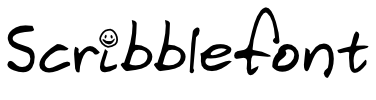

Would you like a font file of your own handwriting?Well, then please be patient. We're working hard on creating a webapp that converts a scan of your handwriting into a TrueType font file. Interested? Leave your email address and we will notify you when it's ready! |